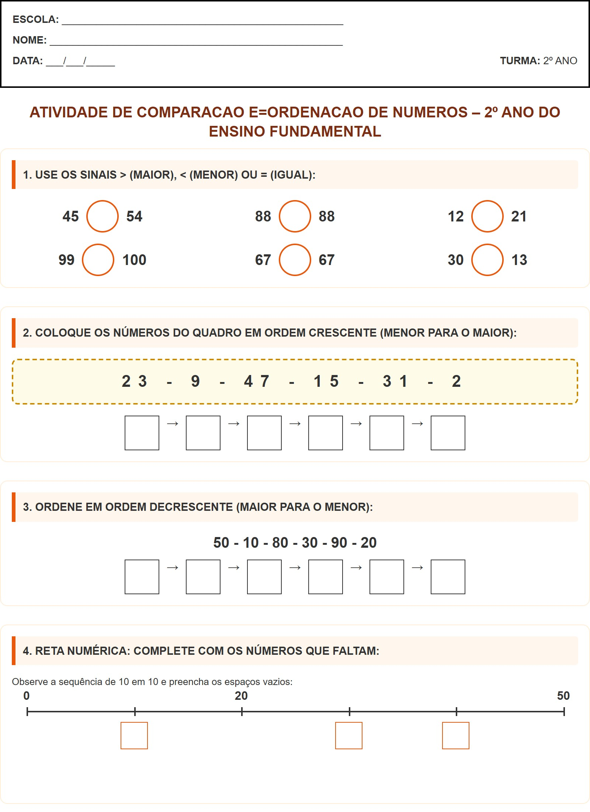

← Voltar ao Portal
ESCOLA:
_________________________________________________
NOME:
___________________________________________________
DATA:
___/___/_____
TURMA:
2º ANO
Atividade de Comparacao E=ordenacao De Numeros – 2º Ano do Ensino Fundamental
1. USE OS SINAIS > (MAIOR), < (MENOR) OU = (IGUAL):
45
54
88
88
12
21
99
100
67
67
30
13
2. COLOQUE OS NÚMEROS DO QUADRO EM ORDEM CRESCENTE (MENOR PARA O MAIOR):
23 - 9 - 47 - 15 - 31 - 2
→
→
→
→
→
3. ORDENE EM ORDEM DECRESCENTE (MAIOR PARA O MENOR):
50 - 10 - 80 - 30 - 90 - 20
→
→
→
→
→
4. RETA NUMÉRICA: COMPLETE COM OS NÚMEROS QUE FALTAM:
Observe a sequência de 10 em 10 e preencha os espaços vazios:
0
20
50
Visualização da Folha de Atividade
